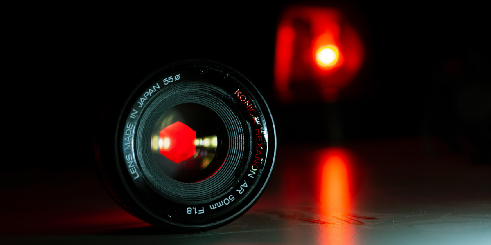

A lens is a tool used to bring light to a fixed focal point. In a film camera, the lens sends the light to the film strip, while in a digital camera (like DSLRs or mirrorless cameras), the lens directs light to a digital sensor.